Discord Remix
Memes are the visual currency of discussions on Discord. People use other apps on their devices to create them and share in chats and communities.
People can’t keep up with the constant stream of sharing in a text channel if they have to leave the app to create a meme or quick composition.
The goal: introduce a creative tool as a surface for visual content on Discord and increase sharing in the mobile app. Not a photo editor, just basic tools to make quick memes and branch off them.
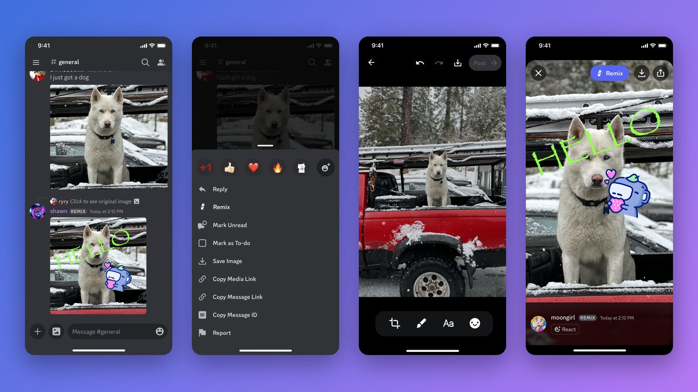
During a design sprint aimed at conceiving new formats for sharing, I proposed several novel ideas that would increase UGC and retention. I helped push for Remix and Polls to be added to the team’s roadmap, both built and shipped in 2023.
A lurker sees a meme chain in a channel → sees the REMIX label → taps → creates → posts.
Media posts create more engagement than text, and new posters are activated across servers.
I explored concepts for how the tools would look, feel, and function, and what types of visual presets could be included, helping set the visual language for memes people could create.
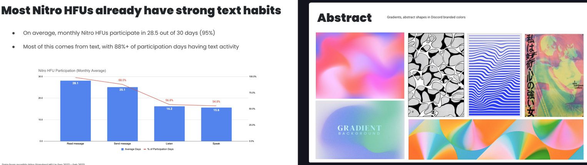
A new entry point in the media viewer and a set of tools that were intuitive and useful for Discord users. Presenting stickers and emoji as prominently as they are in the text composer helped people understand what was possible with the tool.
Letting anyone remix any image was hotly debated at first, due to potential malicious actors or harassment. I worked with the trust and safety team to make sure the proposed attribution and behaviors were acceptable for our user base.
Remixed media has a label on the text line in any text channel or image viewer. The first time people see a remix they see a minimally invasive call out to try. The label becomes part of the language of call and response in any chat, similar to how a normal reply works.
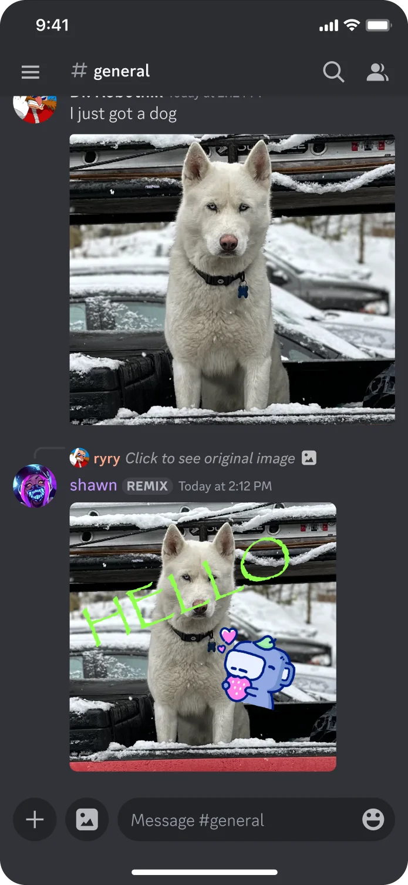
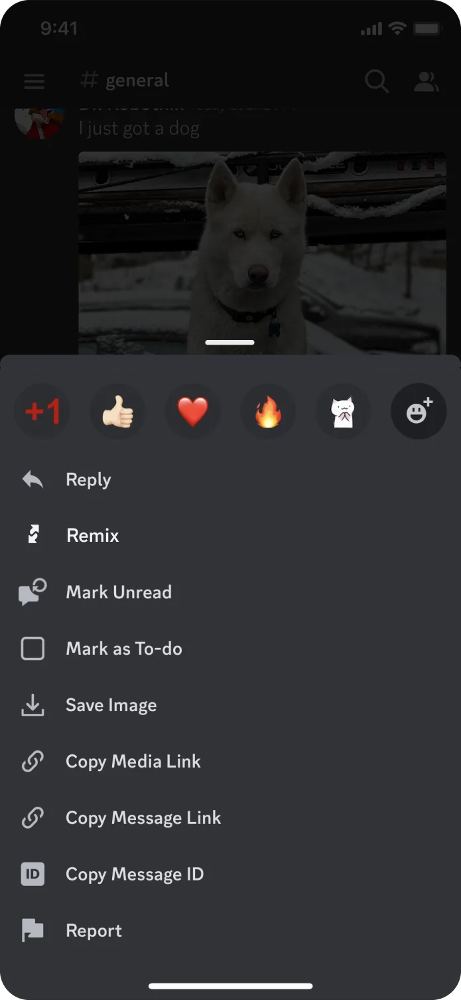
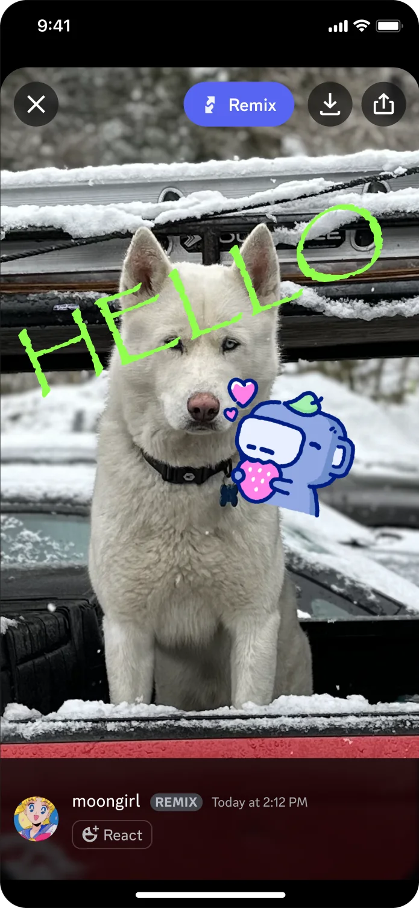
Basic image manipulation: crop, flip, rotate. A simple pen and pencil tool with a resizeable brush. Text on image, cool typefaces, @mentions. Stamping stickers and emoji.
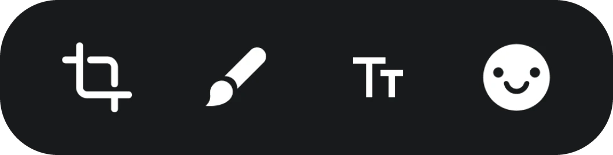
Remix started as reply-only: you remixed an image someone else had posted. User feedback showed people also wanted to edit their own photos from the camera roll before posting, like a quick annotation or meme. I was able to add this to the media picker in a subtle way.
Beyond adding text, stickers, and emoji, I prototyped a few fun ways for people to add an entire image filter to their creations. Setting options at the server or creator level was slated as a potential Nitro feature, so meme creation could follow themes in certain servers or around certain topics.
I worked with an engineer partner to use Midjourney (2023 era models) to let people create their own avatar remixes for specific servers, and stickers from text prompts to expand server collections. Explored as a Nitro exclusive.
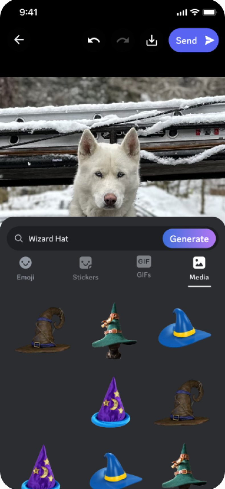
I translated the mobile designs to desktop in tandem throughout the design process. The learnings showed we should have built desktop first to test feature adoption and sentiment.
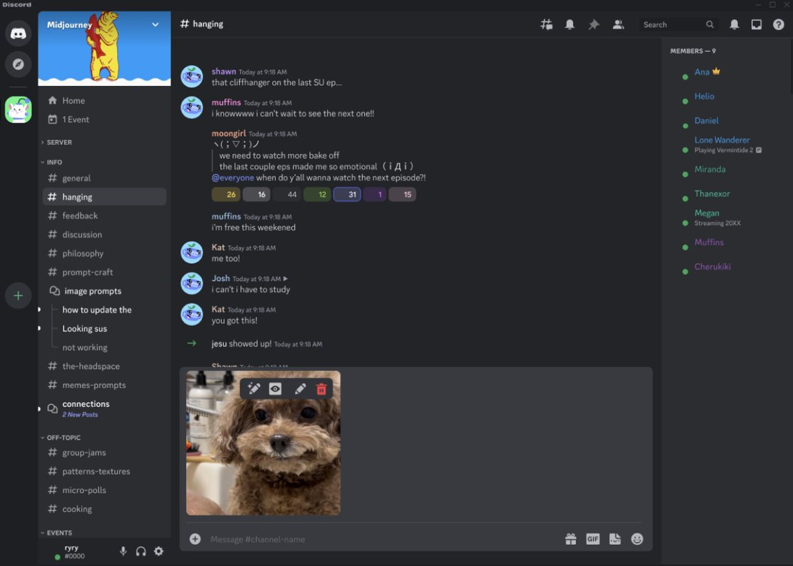
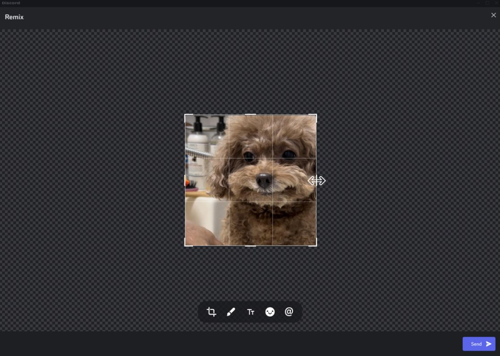
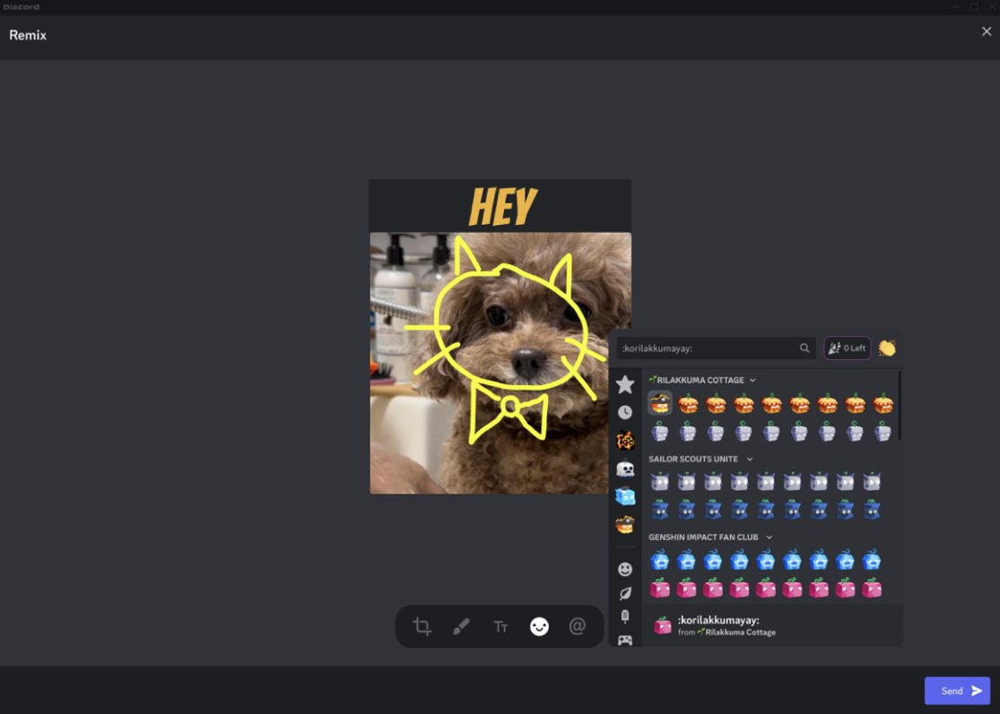
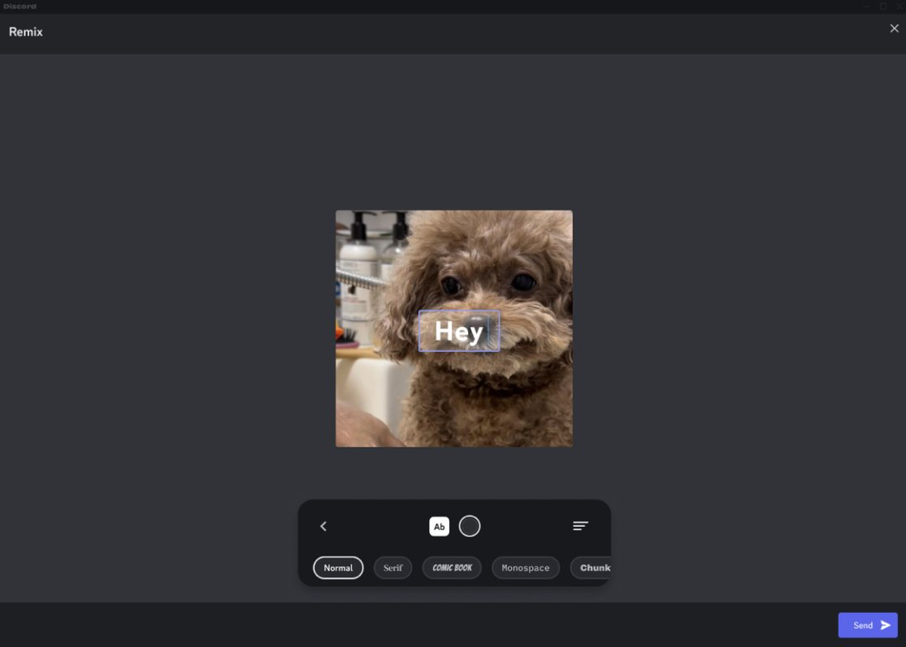
The launch toolset and user journey, from image manipulation to edit to post.
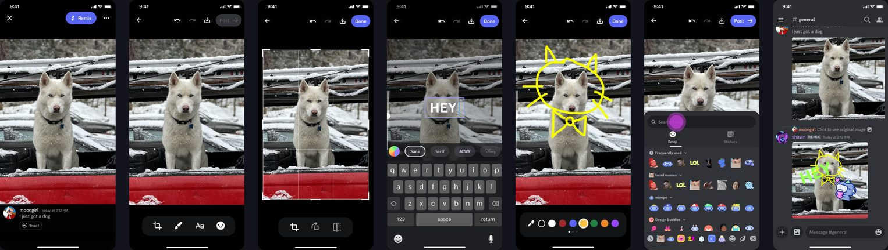
Remix launch was met with overwhelmingly positive sentiment from the Discord community. People liked creating quickly in app with custom emoji, even though other apps had far more advanced feature sets.
No features were gated for Nitro at launch, but Nitro users had early access to Remix for 2 weeks before everyone else.
Example content from the Discord community on launch day. Early access for Nitro users built hype and awareness for free users.
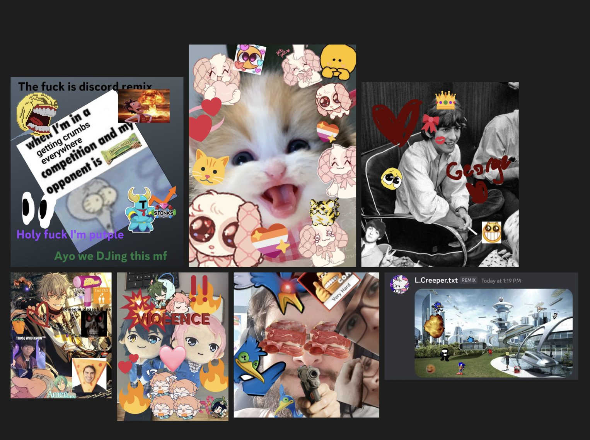
Test on desktop/web first
Building on the platform with more engaged users, and without the hurdles of app releases, would have let us validate the feature set earlier and test what to gate behind Nitro sooner.
Execute a few features, exceptionally
Trimming the feature set down got us a very stable version of Remix, and the extra delight and polish made for a rewarding end user experience.
Scope the heaviest problems honestly
Animated GIFs, videos, and AI stickers were not included in the initial MVP. Finding this out as soon as possible would have made for a more streamlined design and development process and faster decisions.